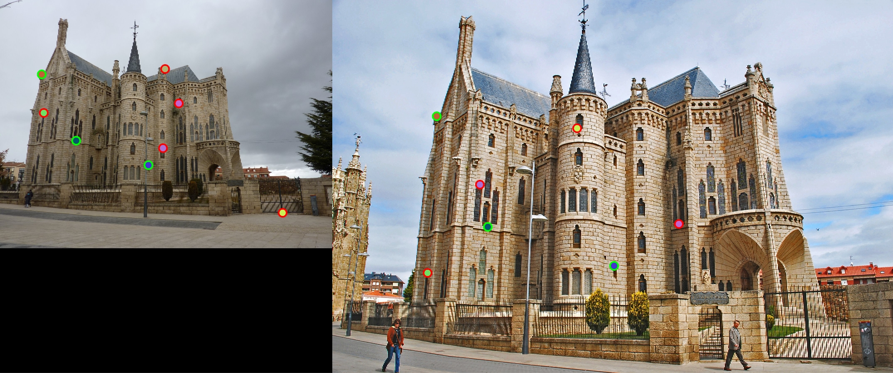
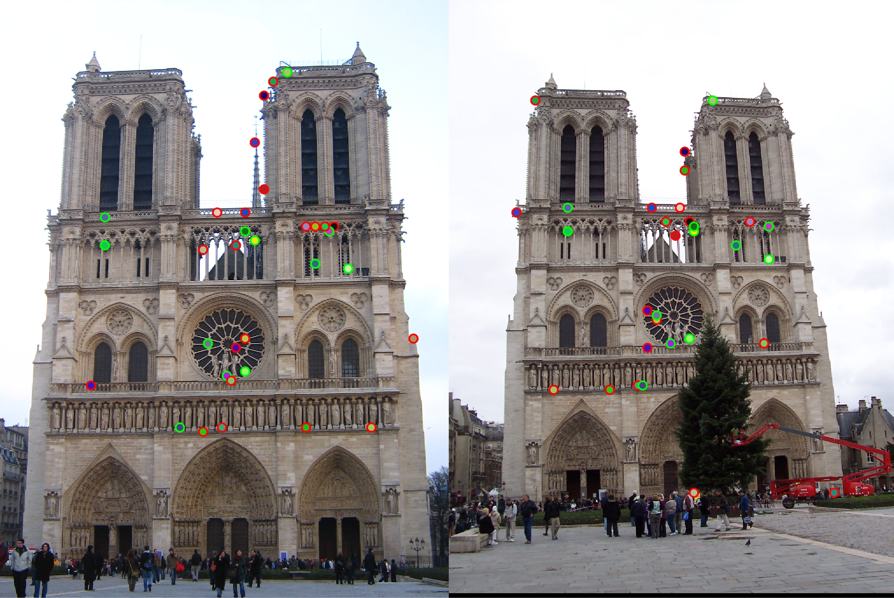
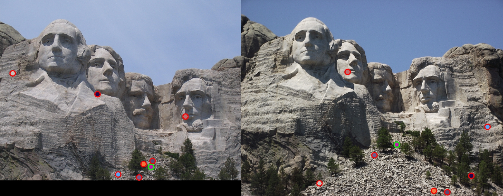
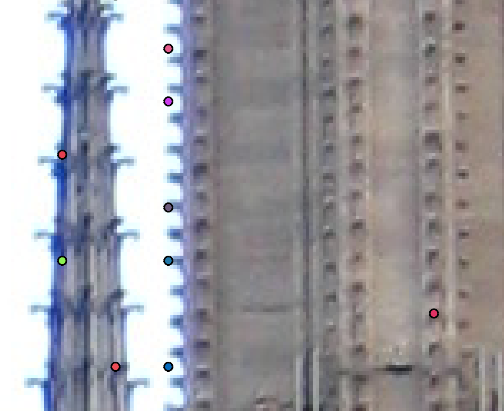

Project 2: Local Feature Matching
Answered Questions
What characteristics should good feature detectors have? Consider the tradeoff between invariance and discriminative power.
Good features should have repeatability, saliency, compactness, and locality. Repeability requires that the detector finds matching points in both images. Saliency requires that the detector finds unique and distinct points. A program that detects indistinct points will later be unable to effectively match them. A good feature detector should be compact: the naive computation of autocorrelation can require billions of computations for a medium-size image. The Taylor approximation of the autocorrelation on the other hand runs relatively quickly. Additionally, a good detector should be find local features. Local features are features that occupy small regions within the image.
Good feature detectors ideally should be invariant to photometric transformations and covariant to geometric transformations. Geometric transformations include translation and rotation. Photometric transformations often include affine intensity change and scaling. Increasing invariance can often decrease discriminative power. For example, increasing invariance to increased scale requires a larger window. The detector becomes scale invariant, but since the window is larger loses some ability to detect smaller local features. The right balance of invariance and discriminative power depends on the nature of the image. An image with many small features, for example, will require greater locality.
What do the eigenvalues of the 'M' second moment matrix represent?
The Taylor series approximation of the autocorrelation function creates a quadratic surface. The eigenvalues of the ‘M’ matrix represent axis sizes of an ellipse from a horizontal slice of this quadratic surface. Windows with corners have low self-similarity, which corresponds to a flat quadratic surface. A flatter quadratic surface will thus have higher eigenvalues.
What is a good method for feature descriptor matching and why?
The Nearest Neighbor ratio matching scheme is a good matching algorithm. Ascending sorting by the ratio of the distances allows the program to choose the most confident matches. Confident matches will have low ratios because the nearest neighbor distance will be low and the next nearest neighbor distance should be high. Thresholding by the NNDR allows the program to eliminate matches between potentially non-salient pairs. The NNDR scheme has less than a 5% probability of detecting an incorrect match for ratios less than 0.75. However, the probability of detecting a correct match is only 0.3 at a peak ratio of 0.45. Thus it is important to have many interest points when using NNDR so the program has sufficient remaining data when throwing out high ratio matches.
Implementation
match_features.m
My ‘match_features.m’ algorithm performs a naive computation of the Euclidean distance between each feature1 and feature2. For the ground truth pair this creates a 149x149 array. I take the nearest neighbor as the match, and i use the next nearest neighbor to compute the Nearest Neighbor Distance Ratio. I then threshold the matches to NNDRs less than 0.85.
get_features.m
My ‘get_features.m’ code creates a 128-dimensional descriptor for an an interest point. This code cannot handle sub-pixel coordinates; it instead snaps the coordinates to the lowest integer. The algorithm filters the image with a 3x3 Gaussian with a standard of deviation 5 before determining the gradients. A 16x16 window is formed around the floored coordinates. The window is further divided into 4x4 cells, and an 8-bin histogram of its gradients is computed for each cell. These histograms are created left to right and to top to bottom for each window. The histograms are then concatenated into a 128-dimensional vector.
get_features_bi.m
My ‘get_features_bi.m’ code creates a 128-dimensional descriptor for an interest point. This code can handle sub-pixel coordinates. This program computes the gradient by simply subtracting the nearest adjacent (sub-)pixel values. The sub-pixel information is handled by the ‘bint’ function. This function uses bilinear interpolation to return a value for a subpixel coordinate.
get_interest_points.m
My ‘get_interest_points.m’ code finds the Harris corners of an input image. My function takes a third parameter: threshold, which is the threshold of the cornerness score. The algorithm first filters with a Gaussian then takes the gradient using my ‘gradient_fun.m’ program. The program then iterates over the image with a 16-pixel window searching for corners; the program does not place windows at edges. Using an alpha value of 0.05, the program computes an M-matrix for each window. The program then registers corners with R-scores greater than 2000. The program does not perform non-maximal suppression. Interest points are indexed (naively) as the center point of a window.
gradient_fun.m
My ‘gradient_fun.m’ code is a short script that mirrors the ‘gradient’ function in MATLAB. It determines the x and y gradients with Sobel filters and the magnitude by taking the square root of the sum of squares. It also returns the direction the gradient as a value between 0°-360°. This code takes the image and returns a gradient magnitude image, the direction image, an x-gradient image, and a y-gradient image.
Results
Ground Truth Results
Notre Dame
I achieved 79% accuracy with the GT pairs of the Notre Dame image. Only 29 matches passed the ratio test, thus 79% accuracy corresponds to 23 good matches, and 6 bad matches.
Mount Rushmore

I achieved 53% accuracy with the GT pairs of the Mount Rushmore image. Only 19 matches passed the ratio test, thus 53% accuracy corresponds to 10 matches.
Episcopal Gaudi
I achieved 38% accuracy with the GT pairs of Episcopal Gaudi. Only 8 matches passed the ratio test. I only achieved 3 matches with this algorithm.
Given the high accuracy on the Notre Dame image, the matching algorithm does not seem to be an issue. The increasing NNDR suggests low specificity in the SIFT-like descriptor: most of the 100-150 ground truth pairs have nearest neighbor ratios greater than 0.85.
Harris Corner Detector Results
Notre Dame
The Notre Dame image achieved 36% accuracy over 33 matches. The Harris detector returned ~500 corners for both images. Approximately 400 of these corners were discarded thus the detector does not have strong saliency.
Mount Rushmore
For an R-score threshold of 2000 the program does not detect any corner points in the first Mount Rushmore image, and detects over 400 points for the second image. The first image is slightly darker than the second, thus my Harris detector responds poorly to affine intensity changes. Lowering the threshold from 2000 to 250 produces 12% accuracy with over 8 matches. This detector produces ~3000 corner points for the second image and 240 corner points for the first image.
Episcopal Gaudi
Using an R-score threshold of 250 produces a 7% accuracy over 14 matches. The corner detector again produces 850 corner points for image 1 and ~8000 corner points for image 2. The issue of saliency, again, seems to be the biggest issue.
Locality
The figure above shows a few unmatched Harris corners. These corners were not matched because they have very high nearest neighbor ratios. However, these corners show that my detector can find extremely localized corners.
Summary:
In summary, the ground truth tests show that the ratio test algorithm performs well, but there are issues in the descriptor and detector. The descriptor needs to more accurately describe interest points. Possible improvements include scale invariance and rotation invariance. Additionally, the Harris detector should be more robust to affine intensity changes and achieve higher saliency.